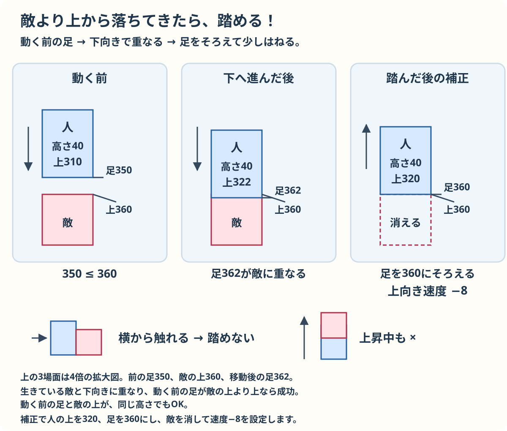
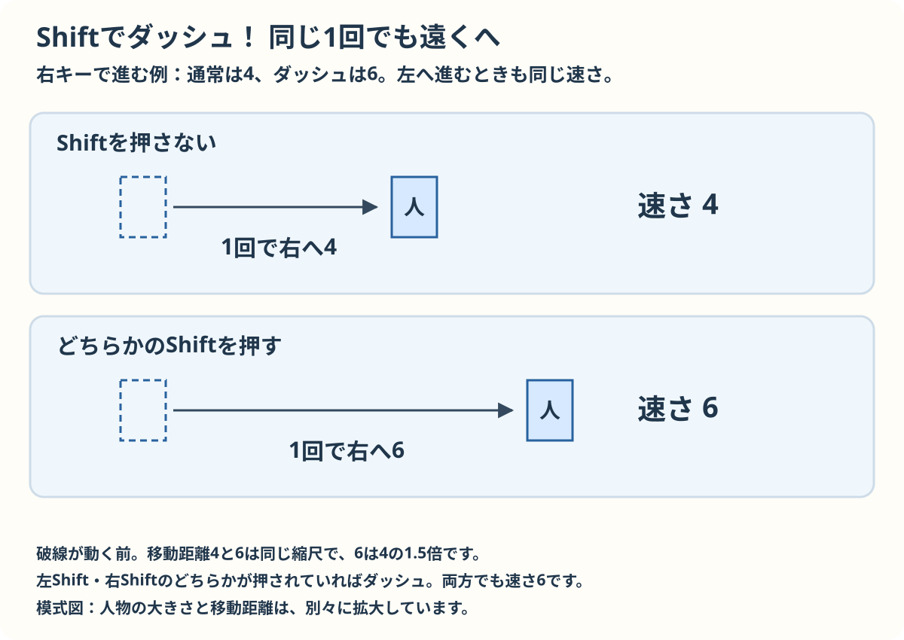
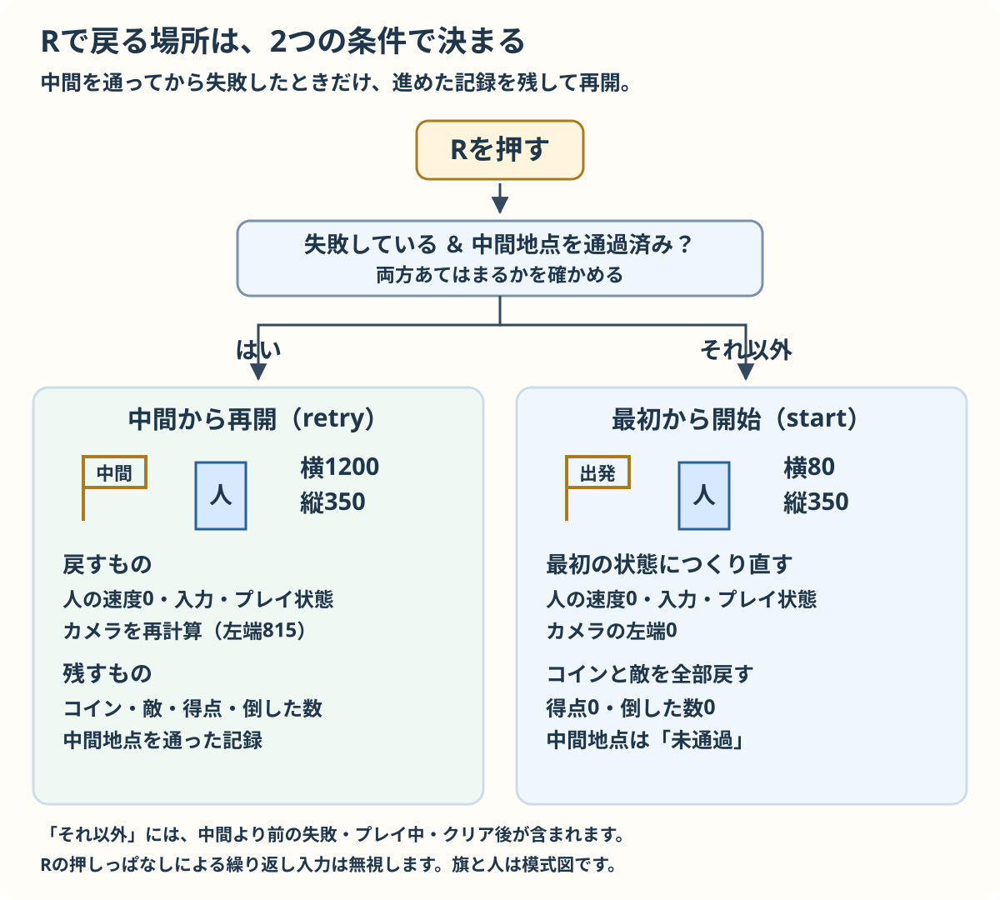

横スクロールゲームの発展課題
上級者向け・基本の6段階の次に
自分で作った横スクロールゲームに、遊び方を広げる機能を加えます。「敵を踏んで倒す」「ダッシュする」「中間ポイントから再挑戦する」の3つに取り組みます。
基本編では template/ の3ファイルから作り始めます。この発展課題は、基本編の完成版から続けます。
目標を読んだら、小さな作業を上から順に進めます。各作業には書く場所、実際のコードと、その意味を載せています。
比較欄の読み方
コードの比較の読み方
比較欄では消す行、追加する行、そのままの行を色とラベルで示します。長い比較では変更のない途中の行を省略することがあります。比較欄は読むためのもので、選択してコピーする欄ではありません。
「置き換える」場合は、赤い行だけを消すのではなく、指定された変更前の範囲すべてをコピー用のコード全体に置き換えます。そのままの行もコピー用のコードに含まれます。古い関数を残して同じ名前の関数を追加しないでください。「追加する」場合は、指定された場所にコピー用のコードを加えます。
コピーするのは「コピー用」と書かれたコード欄です。比較欄のラベルや記号はコードに入りません。全文の見本は手元のコードを見比べるための参考です。
始める前に
基本編の完成版から始めます。ZIPを展開してできたフォルダーでindex.htmlを開きます。ZIPには基本編の3ファイルが入っています。
基本のステップ6まで作った作業用フォルダーを、別の名前でコピーしてください。コピーした script.js を編集します。index.html と style.css は変更しません。
基本版を持っていない場合は、examples/advanced/platformer/complete にある3ファイルを、新しい作業用フォルダーにコピーします。index.html、style.css、script.js は同じフォルダーに置いてください。
課題1から順番に追加します。各課題を終えたら保存し、作業用の index.html をブラウザで開くか、再読み込みしてください。見本のゲームは別ページで開きます。
発展課題 1：敵を上から踏んで倒す
赤い敵を上から踏むと、その敵が消え、プレイヤーが少しはねるようにします。横や下から触れると、これまでどおり失敗です。
できるようにすること
- 落下中に敵の上へ着地したら、その敵だけを倒す。
- 倒した敵は動かず、描かれず、もう一度ぶつかることもない。
- 踏んだ後にはね、画面右上の「倒した敵」が 1 増える。
まず自分で考えよう
四角形が重なっているだけで、踏んだと決めてよいでしょうか。上から来たことを確かめるには、いつの足元を覚えればよいか考えてください。
倒した敵の数を用意する
script.js の次の行を置き換えます。
置き換える範囲
let coins, enemies, score;置き換えるコード
let coins, enemies, score, defeated;defeated は倒した敵の数です。コインの得点とは別に数えます。
敵ごとに生存状態を記録する
Enemy の constructor() の次の行の下に追加します。
目印
this.dx = 1;追加するコード
this.alive = true;alive は、その敵が生きていれば true、倒されていれば false です。各敵はそれぞれ自分の状態を持ちます。
倒した敵の移動を止める
Enemy.update() の開き波括弧の下に追加します。
目印
update() {追加するコード
if (!this.alive) return;! は真偽を反対にします。倒されていれば return でこのメソッドを終えます。
敵が踏まれたときの処理を加える
Enemy.draw() の前に追加します。
目印
draw(cameraX) {
ctx.fillStyle = "#d64b5c";追加するコード
stomp() {
this.alive = false;
}enemy.stomp() はその敵の alive を false にします。
倒した敵を描かない
Enemy.draw() の次の範囲を置き換えます。
置き換える範囲
draw(cameraX) {
ctx.fillStyle = "#d64b5c";置き換えるコード
draw(cameraX) {
if (!this.alive) return;
ctx.fillStyle = "#d64b5c";倒した敵は描画を始める前に処理を終えます。
踏んだ後にはねる
Player.draw() の前に追加します。
目印
draw(cameraX) {
ctx.fillStyle = "#2765b0";追加するコード
bounce(top) {
this.y = top - this.height;
this.vy = -8;
this.onGround = false;
}top は敵の上端の y 座標です。足元をそこにそろえてから vy を -8 にして上にはねます。空中なので onGround は false です。
倒した数を初期化する
start() の次の行の下に追加します。
目印
score = 0;追加するコード
defeated = 0;最初から遊び直すと倒した数も0に戻り、敵も作り直されます。
動く前の足元を覚える
外側の update() でプレイ中かを調べた直後に追加します。
目印
if (state !== "playing") return;追加するコード
const previousBottom = player.y + player.height;動く前の足元を覚え、敵の上から来たかを比べます。
敵を踏んだか判定する
外側の update() の敵との衝突処理を置き換えます。
置き換える範囲
if (overlaps(player, enemy)) state = "over";置き換えるコード
if (!enemy.alive || !overlaps(player, enemy)) continue;
if (player.vy > 0 && previousBottom <= enemy.y) {
enemy.stomp();
player.bounce(enemy.y);
defeated++;
} else {
state = "over";
break;
}生きた敵と重なり、下向きで、動く前の足元が敵の上端以下なら踏みます。例えば敵の上端が360なら、足元が350から362に進むと踏めますが、380から382ではすでに上端より下なので踏めません。cameraX は引かずステージ座標で調べます。横や下から触れたときは失敗です。

説明用の例です。敵の上端は enemy.y = 360、プレイヤーの高さは40。前の足元は previousBottom = 350、動いた後は player.y = 322 なので足元は362です。図は上下の間隔を同じ縮尺で描いています。
前の足元が敵の上以下 350 <= 360、下向き player.vy > 0、overlaps と敵の alive がすべて true なら踏めます。踏んだ後は player.y = 320、vy = -8。横からや上昇中の接触は踏めません。
倒した数を表示する
外側の draw() のコイン数の表示の下に追加します。
目印
ctx.fillText("コイン: " + score + " / " + coins.length, 20, 32);追加するコード
ctx.fillText("倒した敵: " + defeated + " / " + enemies.length, 520, 32);倒した数と敵の総数を表示します。
保存して再読み込みし、敵を上から踏むと消えてはね返り、横から触れると失敗することを確かめます。
ヒントを見る
判定は次の3つに分けます。
overlaps(player, enemy)：今、敵と重なっている。player.vy > 0：今、下へ進んでいる。previousBottom <= enemy.y：動く前の足元が敵の上端より上か同じ高さにあった。
例えば敵の上端が y=360 の場合、足元が 350 から 362 に進むと、上端をまたぎます。一方、足元が 380 から 382 に進んだ場合は、すでに上端より下にいます。落下中でも、後者を踏んだことにはしません。
判定にはステージ全体の座標を使います。表示位置をずらす cameraX は引きません。
書く場所とコードの例を見る
作業用の script.js で、「変更前」と同じ部分を探し、「変更後」に置き換えてください。上から順に全ての変更を加えます。
倒した敵の数を用意する
比較（読むための表示）
変更前のコード全体を確認する
変更前（確認用）：
let coins, enemies, score;変更後（コピー用）：
let coins, enemies, score, defeated;defeated は倒した敵の数です。コインの数を表す score とは別に数えます。
Enemy の constructor に状態を追加する
比較（読むための表示）
変更前のコード全体を確認する
変更前（確認用）：
this.dx = 1;
}変更後（コピー用）：
this.dx = 1;
this.alive = true;
}alive は、その敵が生きていれば true、倒されていれば false にします。Enemy から作った敵は、それぞれ自分の alive を持ちます。
倒した敵の移動を止める
比較（読むための表示）
変更前のコード全体を確認する
変更前（確認用）：
update() {
this.x += this.dx;変更後（コピー用）：
update() {
if (!this.alive) return;
this.x += this.dx;! は true と false を反対にします。!this.alive が true、つまり倒されている場合は、return でこのメソッドを終えます。
Enemy に踏まれたときのメソッドを追加する
比較（読むための表示）
変更前のコード全体を確認する
変更前（確認用）：
draw(cameraX) {
ctx.fillStyle = "#d64b5c";変更後（コピー用）：
stomp() {
this.alive = false;
}
draw(cameraX) {
if (!this.alive) return;
ctx.fillStyle = "#d64b5c";enemy.stomp() を呼ぶと、その敵の alive が false になります。draw() でも状態を調べ、倒した敵を描かないようにします。
Player に踏んだ後ではねるメソッドを追加する
比較（読むための表示）
変更前のコード全体を確認する
変更前（確認用）：
draw(cameraX) {
ctx.fillStyle = "#2765b0";変更後（コピー用）：
bounce(top) {
this.y = top - this.height;
this.vy = -8;
this.onGround = false;
}
draw(cameraX) {
ctx.fillStyle = "#2765b0";top には敵の上端の y 座標が入ります。足元を敵の上端にそろえてから、vy を -8 にして上にはねます。地面には立っていないので onGround は false にします。
start() で倒した数を戻す
比較（読むための表示）
変更前のコード全体を確認する
変更前（確認用）：
score = 0;
coins = [変更後（コピー用）：
score = 0;
defeated = 0;
coins = [最初から遊び直したときは、倒した数も 0 に戻します。start() が new Enemy() で敵を作り直すので、全ての敵が再び alive = true になります。
外側の update() で、動く前の足元を覚える
比較（読むための表示）
変更前のコード全体を確認する
変更前（確認用）：
player.update(terrain);
for (const coin of coins) {変更後（コピー用）：
const previousBottom = player.y + player.height;
player.update(terrain);
for (const coin of coins) {previousBottom はこの1回の更新で動く前の足元です。player.update(terrain) より先に保存します。動いた後の位置だけでは、上から踏んだのか、横から触れたのかを区別できません。
敵に触れたときの判定を置き換える
次は説明用の抜粋です。編集にはこの後の「比較とコピー用コード」を開いて使います。
判定する敵を選ぶ
倒した敵や重なっていない敵は次へ進みます。
if (!enemy.alive || !overlaps(player, enemy)) continue;! は真偽を逆にし、|| はどちらかが成り立てば真です。continue は今の敵の残りを飛ばし、次の敵を調べます。
上から踏んだか調べる
落下中で、動く前の足元が敵の上端より上か同じ高さかを調べます。
if (player.vy > 0 && previousBottom <= enemy.y) {
enemy.stomp();
player.bounce(enemy.y);
defeated++;vy > 0 は下向きの移動、previousBottom <= enemy.y は更新前の足元の y 座標が敵の上端より小さいか同じであることです。&& で両方を満たすと敵を倒し、敵の上端を渡してはね、倒した数を1増やします。例えば上端360に対し足元が350から362へ移ると踏みます。移動前が380なら落下中でも踏んだことにしません。判定はステージ座標を使い、cameraX を引きません。
横や下から触れた場合
踏む条件に合わない接触は失敗です。
} else {
state = "over";
break;
}else は踏む条件が成り立たない場合です。状態を over にし、break で敵の繰り返しを終えます。
比較とコピー用コードを開く
比較（読むための表示）
変更前のコード全体を確認する
変更前（確認用）：
for (const enemy of enemies) {
if (overlaps(player, enemy)) state = "over";
}変更後（コピー用）：
for (const enemy of enemies) {
if (!enemy.alive || !overlaps(player, enemy)) continue;
if (player.vy > 0 && previousBottom <= enemy.y) {
enemy.stomp();
player.bounce(enemy.y);
defeated++;
} else {
state = "over";
break;
}
}draw() に倒した数を表示する
比較（読むための表示）
変更前のコード全体を確認する
変更前（確認用）：
ctx.fillText("コイン: " + score + " / " + coins.length, 20, 32);変更後（コピー用）：
ctx.fillText("コイン: " + score + " / " + coins.length, 20, 32);
ctx.fillText("倒した敵: " + defeated + " / " + enemies.length, 520, 32);画面右上に倒した数を表示します。敵を倒すのはゴールに進むための手段の一つです。全て倒さなくてもクリアできます。
保存後の確かめ方
- 敵の少し手前からジャンプし、敵の真上で移動キーを離して着地します。敵が消え、プレイヤーがはねれば成功です。
- ジャンプせずに敵へ歩いてぶつかります。失敗することを確かめます。
- 倒した敵がいた場所へ戻ります。敵が現れず、倒した数も増えないことを確かめます。
- R キーで最初から遊び直します。2体の敵と、倒した数が戻ることを確かめます。
課題1まで追加した見本で遊ぶ見本の script.js を読む
小さな工夫
bounce() の -8 を -6 に変え、踏んだ後のはねる高さを比べてください。終わったら -8 に戻してから次へ進みます。
発展課題 2：Shift キーでダッシュする
課題1のコードに追加します。左右どちらかの Shift キーを押している間、横へ進む速さを変えます。
できるようにすること
- いつもは 1回の更新で 4、Shift を押している間は 6 だけ横へ進む。
- Shift を離すと元の速さに戻り、別のタブへ移った後もダッシュが残らない。
- ダッシュ中も壁にぶつかる判定と、敵を踏む判定が働く。
まず自分で考えよう
Player の update(terrain) にある 4 を、どんな値に置き換えればよいでしょうか。押しているキーを覚える仕組みも、左右移動のコードと見比べてください。
左右のShiftを記録する
script.js の入力状態の宣言の下に追加します。
目印
let left = false, right = false, jumpHeld = false, jumpPressed = false;追加するコード
let dashLeft = false, dashRight = false;左右の Shift を別々に記録します。両方を押して片方を離しても、もう片方の状態は残ります。
ダッシュの速さを選ぶ
Player.update() の次の行を置き換えます。
置き換える範囲
const dx = (right ? 4 : 0) - (left ? 4 : 0);置き換えるコード
const speed = (dashLeft || dashRight) ? 6 : 4;
const dx = (right ? speed : 0) - (left ? speed : 0);dashLeft || dashRight は左右どちらかの Shift が押されていると真です。押していれば速さ6、そうでなければ4を dx の計算に使います。ジャンプの vy と重力の0.5は変えません。

左右キーで進むとき、Shift を押していなければ速さ4、左右どちらかの Shift を押していれば速さ6です。dashLeft || dashRight で確かめます。両方押して片方を離しても、もう片方が押されたままなら速さ6です。
開始時にShiftの状態を戻す
start() の次の範囲の下に追加します。
目印
player = new Player();
left = false; right = false; jumpHeld = false; jumpPressed = false;追加するコード
dashLeft = false; dashRight = false;再挑戦のときに両方の状態を戻します。
Shiftの押下を記録する
keydown で右キーの次の行の下に追加します。
目印
if (event.code === "ArrowRight") right = true;追加するコード
if (event.code === "ShiftLeft") dashLeft = true;
if (event.code === "ShiftRight") dashRight = true;押された左右それぞれの Shift の状態を true にします。
Shiftを離したことを記録する
keyup で右キーの次の行の下に追加します。
目印
if (event.code === "ArrowRight") right = false;追加するコード
if (event.code === "ShiftLeft") dashLeft = false;
if (event.code === "ShiftRight") dashRight = false;離した側の状態だけを false にします。
画面を離れたら入力を戻す
blur の次の範囲の下に追加します。
目印
window.addEventListener("blur", () => {
left = false; right = false; jumpHeld = false; jumpPressed = false;追加するコード
dashLeft = false; dashRight = false;別のタブに移ったときも Shift の押下を消します。
ダッシュ操作を表示する
draw() の操作説明を置き換えます。
置き換える範囲
ctx.fillText("←→ 移動 Space / ↑ ジャンプ R 再挑戦", 20, 438);置き換えるコード
ctx.fillText("←→ 移動 Shift ダッシュ Space / ↑ ジャンプ R 再挑戦", 20, 438);画面の操作説明に Shift を加えます。
保存して再読み込みし、左右に進みながら Shift を押すと速くなり、離すと元に戻ることを確かめます。左右両方の Shift を押して片方だけ離す場合も試します。
ヒントを見る
速さを入れる speed を用意し、dx の計算に使います。ジャンプの vy や重力の 0.5 は変えません。
左右の Shift を一つの変数だけで覚えると、両方を押して片方を離した場合に困ります。dashLeft と dashRight を分け、どちらかが押されているか調べてください。
書く場所とコードの例を見る
作業用の script.js で、「変更前」と同じ部分を探し、「変更後」に置き換えてください。上から順に全ての変更を加えます。
Shift キーの状態を用意する
比較（読むための表示）
変更前のコード全体を確認する
変更前（確認用）：
let left = false, right = false, jumpHeld = false, jumpPressed = false;変更後（コピー用）：
let left = false, right = false, jumpHeld = false, jumpPressed = false;
let dashLeft = false, dashRight = false;左右の Shift キーを別々に覚えます。両方を押してから片方を離したときも、もう片方が押されていればダッシュを続けられます。
Player の update(terrain) で速さを選ぶ
比較（読むための表示）
変更前のコード全体を確認する
変更前（確認用）：
const dx = (right ? 4 : 0) - (left ? 4 : 0);変更後（コピー用）：
const speed = (dashLeft || dashRight) ? 6 : 4;
const dx = (right ? speed : 0) - (left ? speed : 0);|| は、少なくとも片方が true なら true になります。条件 ? A : B は、条件が true なら A、false なら B を選びます。Shift を押していれば 6、押していなければ 4 だけ、1回の更新で横へ進みます。
start() でダッシュも解除する
比較（読むための表示）
変更前のコード全体を確認する
変更前（確認用）：
left = false; right = false; jumpHeld = false; jumpPressed = false;
cameraX = 0;変更後（コピー用）：
left = false; right = false; jumpHeld = false; jumpPressed = false;
dashLeft = false; dashRight = false;
cameraX = 0;最初から遊び直した後に、前のダッシュの状態を残さないようにします。
keydown で Shift を押したことを覚える
比較（読むための表示）
変更前のコード全体を確認する
変更前（確認用）：
if (event.code === "ArrowRight") right = true;変更後（コピー用）：
if (event.code === "ArrowRight") right = true;
if (event.code === "ShiftLeft") dashLeft = true;
if (event.code === "ShiftRight") dashRight = true;ShiftLeft は左の Shift、ShiftRight は右の Shift のキーコードです。左右の移動キーと同じように、押したら true にします。
keyup で Shift を離したことを覚える
比較（読むための表示）
変更前のコード全体を確認する
変更前（確認用）：
if (event.code === "ArrowRight") right = false;変更後（コピー用）：
if (event.code === "ArrowRight") right = false;
if (event.code === "ShiftLeft") dashLeft = false;
if (event.code === "ShiftRight") dashRight = false;離した側だけを false にします。両方が false に戻ると、いつもの速さになります。
別のタブへ移ったときも解除する
比較（読むための表示）
変更前のコード全体を確認する
変更前（確認用）：
window.addEventListener("blur", () => {
left = false; right = false; jumpHeld = false; jumpPressed = false;
});変更後（コピー用）：
window.addEventListener("blur", () => {
left = false; right = false; jumpHeld = false; jumpPressed = false;
dashLeft = false; dashRight = false;
});blur は、この画面から操作が外れたときに起こります。キーを離した知らせを受け取れなかった場合に備え、ダッシュも解除します。
画面下の操作説明を変える
比較（読むための表示）
変更前のコード全体を確認する
変更前（確認用）：
ctx.fillText("←→ 移動 Space / ↑ ジャンプ R 再挑戦", 20, 438);変更後（コピー用）：
ctx.fillText("←→ 移動 Shift ダッシュ Space / ↑ ジャンプ R 再挑戦", 20, 438);ダッシュの操作も表示します。Shift だけでは進まず、左右キーと一緒に押すと速く進みます。
保存後の確かめ方
- 同じ地面で、右キーだけの場合と、Shift と右キーを押した場合の速さを比べます。
- 左右の Shift を両方押し、片方だけ離します。ダッシュが続くことを確かめます。
- Shift を離したとき、R キーで遊び直したとき、別のタブから戻ったときに、いつもの速さへ戻ることを確かめます。
- ダッシュして壁に向かい、通り抜けないことを確かめます。ジャンプ中に進む距離も比べます。
課題2まで追加した見本で遊ぶ見本の script.js を読む
小さな工夫
ダッシュの 6 を 5 に変え、操作しやすさを比べてください。終わったら 6 に戻してから次へ進みます。
発展課題 3：中間ポイントから再挑戦する
課題2のコードに追加します。ステージの途中に目印を置き、通過した後に失敗したら、その場所から遊び直せるようにします。
できるようにすること
- x=1200 の目印に触れると、色が変わり「通過済み」と表示される。
- 通過後に失敗して R を押すと、中間ポイントから再開する。取ったコインと倒した敵の記録は残る。
- 通過前の失敗、プレイ中、クリア後に R を押すと、全てを最初に戻す。
まず自分で考えよう
start() をそのまま呼ぶと、コインも敵も作り直します。途中から再開する場合に戻す値と、残す値を、先に書き出してみてください。
中間ポイントを用意する
script.js のゴールの次の行の下に追加します。
目印
const goal = { x: 2300, y: 310, width: 35, height: 80 };追加するコード
const checkpoint = { x: 1200, y: 310, width: 24, height: 80, active: false };左上が (1200, 310)、幅24、高さ80の目印を作ります。active は通過したかを記録します。
最初から始めると通過を戻す
start() の次の行の下に追加します。
目印
cameraX = 0;追加するコード
checkpoint.active = false;最初から遊ぶときは通過の記録を消します。
中間から再開する関数を作る
外側の update() の前に追加します。
目印
function update() {追加するコード
function retry() {
player = new Player();
player.x = checkpoint.x;
}新しいプレイヤーを作り、中間ポイントの x に置きます。
入力とカメラを戻す
retry() の次の行の下に追加します。
目印
player.x = checkpoint.x;追加するコード
left = false; right = false; jumpHeld = false; jumpPressed = false;
dashLeft = false; dashRight = false;
cameraX = Math.max(0, Math.min(WORLD_WIDTH - canvas.width,
player.x + player.width / 2 - canvas.width / 2));
state = "playing";キー入力を消し、カメラを再開位置に合わせてプレイ中にします。コイン、敵、score、defeated、通過の記録は残します。
中間ポイントへの接触を記録する
外側の update() でゴール判定の前に追加します。
目印
if (state === "playing" && overlaps(player, goal)) state = "clear";追加するコード
if (state === "playing" && overlaps(player, checkpoint)) checkpoint.active = true;プレイ中に目印と重なったら通過済みにします。
目印を描く
draw() のゴールの色を決める行の前に追加します。
目印
ctx.fillStyle = "#8455a5";追加するコード
ctx.fillStyle = checkpoint.active ? "#e6a817" : "#587b9a";
ctx.fillRect(checkpoint.x - cameraX, checkpoint.y, checkpoint.width, checkpoint.height);
ctx.fillStyle = "#26334a";
ctx.font = "17px sans-serif";
ctx.fillText("中間", checkpoint.x - cameraX - 5, checkpoint.y - 10);
ctx.fillText(checkpoint.active ? "中間ポイント: 通過済み" : "中間ポイント: 未通過", 20, 60);
ctx.font = "22px sans-serif";通過済みかどうかで色と表示を変えます。位置から cameraX を引いて画面に描きます。
失敗時の案内を切り替える
draw() の次の行を置き換えます。
置き換える範囲
if (state === "over") ctx.fillText("ゲームオーバー！ R キーでもう一度", 180, 210);置き換えるコード
if (state === "over") {
const message = checkpoint.active
? "ゲームオーバー！ R キーで中間から"
: "ゲームオーバー！ R キーでもう一度";
ctx.fillText(message, 180, 210);
}中間ポイントの通過後は、中間から再開する案内を表示します。
Rキーで再開場所を選ぶ
Rキーを調べる次の行を置き換えます。
置き換える範囲
if (event.code === "KeyR") start();置き換えるコード
if (event.code === "KeyR" && !event.repeat) {
if (state === "over" && checkpoint.active) retry();
else start();
}失敗して通過済みなら retry() で中間から、それ以外は start() で最初から始めます。event.repeat が真の押し続けによる繰り返し入力は受け付けません。

state === "over" && checkpoint.active なら retry() で中間から。それ以外は start() で最初からです。event.repeat が true の繰り返し入力は受け付けません。
中間から再開すると、プレイヤーの位置と速度、入力、カメラ、状態を戻します。コインと敵の状態、score、defeated、中間地点の記録は残ります。
保存して再読み込みし、中間を通過して失敗した後はRで中間から戻ることを確かめます。通過前の失敗とクリア後は最初から戻ることも試します。
ヒントを見る
途中から再開するときに戻すのは、プレイヤー、キー入力、カメラ、state です。コイン、敵、score、defeated、通過の記録は残します。
retry() という関数を作り、最初から遊ぶ start() と使い分けます。目印は、地面があり、壁や敵と重ならない場所に置いてください。
書く場所とコードの例を見る
作業用の script.js で、「変更前」と同じ部分を探し、「変更後」に置き換えてください。上から順に全ての変更を加えます。
goal の直後に中間ポイントを用意する
比較（読むための表示）
変更前のコード全体を確認する
変更前（確認用）：
const goal = { x: 2300, y: 310, width: 35, height: 80 };変更後（コピー用）：
const goal = { x: 2300, y: 310, width: 35, height: 80 };
const checkpoint = { x: 1200, y: 310, width: 24, height: 80, active: false };checkpoint は途中から再開する場所です。active は、まだ触れていなければ false、触れた後は true にします。今回は、地面があり壁と重ならない x=1200 に置きます。
start() で中間ポイントを未通過に戻す
比較（読むための表示）
変更前のコード全体を確認する
変更前（確認用）：
cameraX = 0;
score = 0;変更後（コピー用）：
cameraX = 0;
checkpoint.active = false;
score = 0;最初から遊ぶ start() では中間ポイントの記録も消します。途中からの再挑戦には次に作る retry() を使います。
外側の update() の前に retry() を追加する
次は説明用の抜粋です。編集にはこの後の「比較とコピー用コード」を開いて使います。
プレイヤーと入力を戻す
中間ポイントから新しいプレイヤーで再開します。
player = new Player();
player.x = checkpoint.x;
left = false; right = false; jumpHeld = false; jumpPressed = false;
dashLeft = false; dashRight = false;new Player() で位置や落下速度を初期化し、横位置を中間ポイントに合わせます。押し続けていたキーの状態も解除します。コイン、敵、得点、倒した数と通過記録は作り直さず、進み具合を残します。
カメラと状態を戻す
再開位置に合わせて表示範囲を決めます。
cameraX = Math.max(0, Math.min(WORLD_WIDTH - canvas.width,
player.x + player.width / 2 - canvas.width / 2));
state = "playing";プレイヤーの中心から画面幅の半分を引き、カメラがステージの外に出ない範囲に収めます。playing に戻すと今あるゲームループの次の更新から動きます。gameLoop() を新たに呼ぶ必要はありません。
比較とコピー用コードを開く
比較（読むための表示）
変更前のコード全体を確認する
変更前（確認用）：
function update() {
if (state !== "playing") return;変更後（コピー用）：
function retry() {
player = new Player();
player.x = checkpoint.x;
left = false; right = false; jumpHeld = false; jumpPressed = false;
dashLeft = false; dashRight = false;
cameraX = Math.max(0, Math.min(WORLD_WIDTH - canvas.width,
player.x + player.width / 2 - canvas.width / 2));
state = "playing";
}
function update() {
if (state !== "playing") return;外側の update() で、中間ポイントに触れたか調べる
比較（読むための表示）
変更前のコード全体を確認する
変更前（確認用）：
if (state === "playing" && overlaps(player, goal)) state = "clear";変更後（コピー用）：
if (state === "playing" && overlaps(player, checkpoint)) checkpoint.active = true;
if (state === "playing" && overlaps(player, goal)) state = "clear";触れたら active を true にします。敵や落下による失敗を調べた後で判定し、playing の間だけ記録します。敵と同時に触れて失敗した場合は、中間ポイントを通過したことにしません。
draw() で中間ポイントと通過の記録を描く
次は説明用の抜粋です。編集にはこの後の「比較とコピー用コード」を開いて使います。
通過に合わせて色を選ぶ
中間ポイントをカメラに合わせて描きます。
ctx.fillStyle = checkpoint.active ? "#e6a817" : "#587b9a";
ctx.fillRect(checkpoint.x - cameraX, checkpoint.y, checkpoint.width, checkpoint.height);active が true なら黄色、そうでなければ青みのある灰色です。ステージ座標から cameraX を引き、画面上の位置を求めます。
通過の記録を表示する
左上の文字でも通過状態を見られるようにします。
ctx.fillText(checkpoint.active ? "中間ポイント: 通過済み" : "中間ポイント: 未通過", 20, 60);条件 ? A : B で通過済みか未通過かの文字を選び、画面上の (20, 60) に描きます。
比較とコピー用コードを開く
比較（読むための表示）
変更前のコード全体を確認する
変更前（確認用）：
ctx.fillStyle = "#8455a5";
ctx.fillRect(goal.x - cameraX, goal.y, goal.width, goal.height);変更後（コピー用）：
ctx.fillStyle = checkpoint.active ? "#e6a817" : "#587b9a";
ctx.fillRect(checkpoint.x - cameraX, checkpoint.y, checkpoint.width, checkpoint.height);
ctx.fillStyle = "#26334a";
ctx.font = "17px sans-serif";
ctx.fillText("中間", checkpoint.x - cameraX - 5, checkpoint.y - 10);
ctx.fillText(checkpoint.active ? "中間ポイント: 通過済み" : "中間ポイント: 未通過", 20, 60);
ctx.font = "22px sans-serif";
ctx.fillStyle = "#8455a5";
ctx.fillRect(goal.x - cameraX, goal.y, goal.width, goal.height);失敗したときの案内を変える
比較（読むための表示）
変更前のコード全体を確認する
変更前（確認用）：
if (state === "over") ctx.fillText("ゲームオーバー！ R キーでもう一度", 180, 210);変更後（コピー用）：
if (state === "over") {
const message = checkpoint.active
? "ゲームオーバー！ R キーで中間から"
: "ゲームオーバー！ R キーでもう一度";
ctx.fillText(message, 180, 210);
}通過後に失敗したときだけ、「R キーで中間から」と表示します。通過前は最初からやり直します。
R キーで呼ぶ関数を分ける
比較（読むための表示）
変更前のコード全体を確認する
変更前（確認用）：
window.addEventListener("keydown", (event) => {
if (event.code === "KeyR") start();
});変更後（コピー用）：
window.addEventListener("keydown", (event) => {
if (event.code === "KeyR" && !event.repeat) {
if (state === "over" && checkpoint.active) retry();
else start();
}
});失敗していて、中間ポイントも通過済みなら retry()、それ以外なら start() を呼びます。プレイ中やクリア後の R は、全てを最初に戻します。
event.repeat は、長押しで同じキーの入力が繰り返されたとき true になります。!event.repeat で最初の1回だけ受け付け、再開直後に start() が呼ばれるのを防ぎます。
保存後の確かめ方
- 目印に触れ、色と左上の表示が変わることを確かめます。
- 目印の先のすき間へ落ち、R を押します。中間から再開し、それまでのコインと倒した敵の数が残ることを確かめます。
- R を押し続けても、中間から再開した直後に最初へ戻らないことを確かめます。
- 再開した後に R を一度離し、もう一度押します。プレイ中なので最初からになり、コイン、敵、通過の記録も戻ることを確かめます。
- 中間ポイントを通る前の失敗と、ゴール後にも R を試します。どちらも最初から遊べます。
課題3まで追加した見本で遊ぶ見本の script.js を読む
小さな工夫
中間ポイントを別の安全な場所に移してください。移動先に地面があり、再開するプレイヤーが壁や敵と重ならないか確かめます。
さらに自分で作るなら
3つを作れたら、次の中から一つ選んで計画を立ててください。ここからはコードの例を載せていません。変える場所と、成功したときの動きを先に書いてみましょう。
- 残り回数：失敗するたびに 1 減らし、0 になったら最初からにします。減らすのはどの関数か、R キーの長押しで何度も減らないかを考えます。
- 下からたたくブロック：Player の天井にぶつかる判定を使い、ブロックをたたくとコインが出るようにします。同じブロックから何度でも取れてよいかも決めます。
- 動く足場：足場のクラスを作り、左右へ動かします。プレイヤーが乗っている間、足場と一緒に動くにはどうすればよいかを考えます。